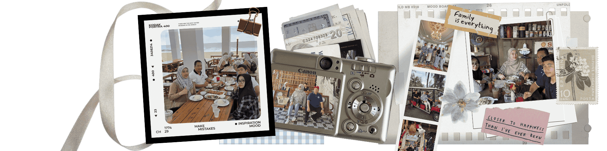

Introducing
IntroducingMy Family Members
IntroducingMy family has always been a big part of who I am. They support me in many ways and help me stay motivated in both my studies and daily life. For me, the best thing about memories is making them with my and only one family. In the end, family is all that matters.
Family, a group of persons united by the ties of marriage, blood, or adoption, constituting a single household and interacting with each other in their respective social positions, usually those of spouses, parents, children, and siblings. The family group should be distinguished from a household, which may include boarders and roomers sharing a common residence. It should also be differentiated from a kindred (which also concerns blood lines), because a kindred may be divided into several households. Frequently the family is not differentiated from the marriage pair, but the essence of the family group is the parent-child relationship, which may be absent from many marriage pairs. by Barnard John. Edited on 25 December 2025 on Britannica.

My father's name is Rosmadi bin Mohamed. He works as a Manager in a government office. My father is very chill and such an outgoing person to be with. Meanwhile, my mother's name is Amalina binti Yusuf and she works as an Administrative Assistant in a government office too. Honestly, my mom is a little bit hot-headed butt she is very caring and willing to spend her money for me. My parents are the ones that loved me no matter what, looked after me when I were little, and raised me. Repaying them for all the care and affection they showed me is the moral thing to do.
This is my siblings, my little brother Aqiff Hariz who are still student and my older sister, Allya Marissa who are currently doing her internships. Even though we always yell at each other and fight, we still need one another. Our relationship is full of love and hate, but that is what makes us family. No matter how much we argue, we will always care and stand by each other. They know my strengths, my weaknesses, and my true self. Having them in my life makes me feel supported, understood, and never alone.